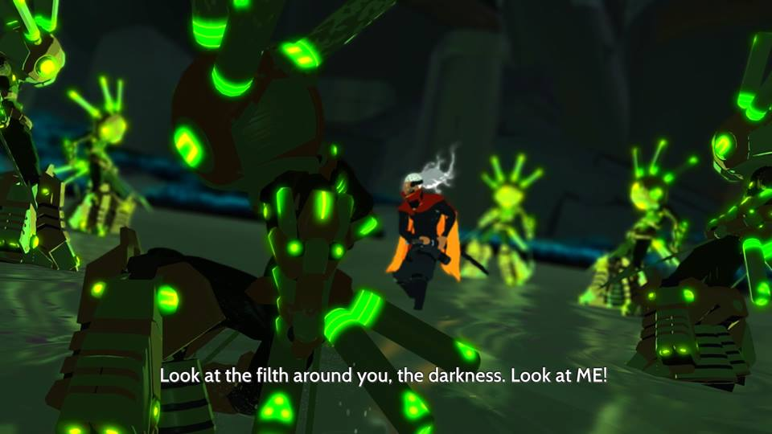
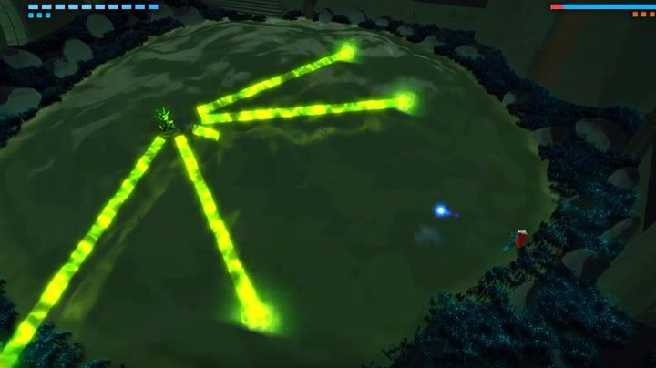
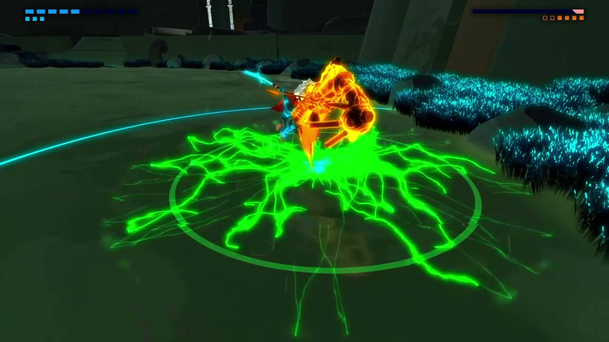
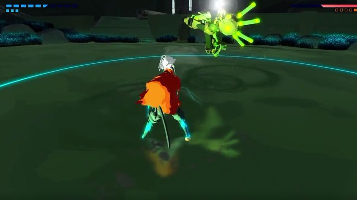
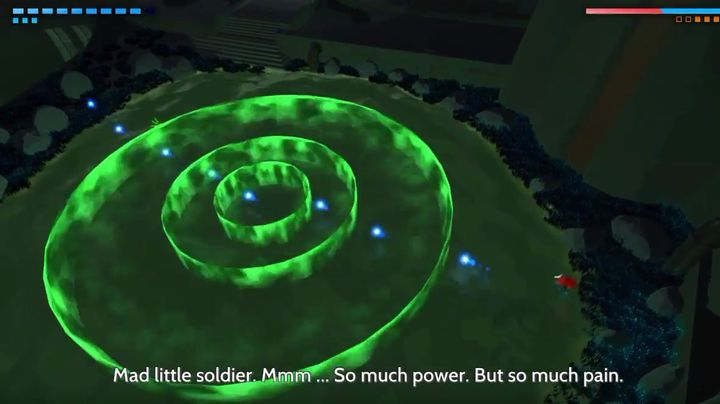
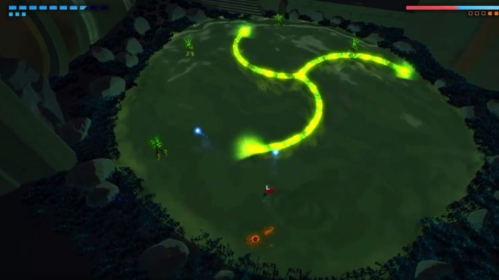
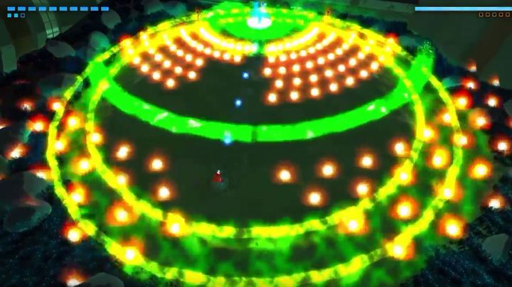
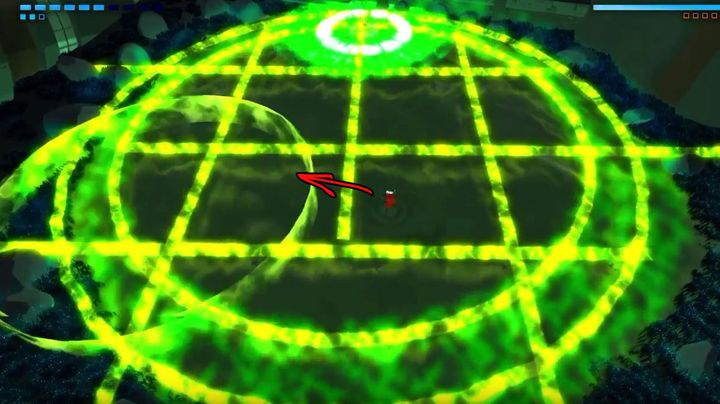

Now I am going to give you a small warning for this fight so clickhere to skip straight to the guide.Now this boss is commonly refered to as poison diver or the druggee as this fight has a very annoying gimmick. Everytime he hits you the screen will distort with the classic nausea effect you see in movies and the more he hits you the worst it gets. As this a long fight and The Scale is a boss that restricts your movement and forces you to get hit alot this can get rather sickening. Not only that but he will summon clones to do attacks, you must kill them all and his health bar is not effected by his clones taking damgage.
I do not reccomend fighting this boss for long periods of time as it is both infuriating and nauseating. I have felt sick and my eyes started to hurt after fighting him for a while, so if you ever feel any eye pain or feel sick STOP PLAYING.Along with the dumb nausea effect he is the games first real difficulty spike. I actually stopped playing the game because he made me so mad,this fight I feel should not have been left in the game as it is so fustrating.Now I know Furi has a sort of quality that makes you want to play it over and over again but your well being should always come first. My rule for this boss is to only fight him only ten times per session. If you think you can stomach this boss or have fought him enough times to be used to it then go ahead and play a bit longer, but if you’re still a bit new to the game then do not fight him for too long. Just make sure to take your time and learn his moves as you fight him. It would also be a good idea to look up other guides.I will also say that the bosses just get harder from here so if you can't beat him or you are getting too mad during the fight then I sugest you stop playing the game. This game is known for being called the wrong kind of hard and this is the reason why, so whatever you do stop when you need to. I know I sound a bit repetitive at this point but I persinally feel that you shouldn't have a great game ruined for you by it being too hard to play, so do your best to persevere and you’ll get to the truly well made bosses. Anyways, remember this before anything else. Now lets get into the fight.
Now the design of this boss was rather clever as he looks and moves like a monster from a horror movie and the voice actor has done a very good job with him as he just sounds absolutely insane. Now the whole story behind this boss is that his world has been destroyed by a meteor and he has been driven insane by the experience. He now believes that you are the cause of his world’s destruction and wants to destroy you.Now this bosses gimmick is restriction. He has a unique type of shot that is like a branching line.
Now one mechanic I haven’t mentioned is the glowing state. During this state the boss is invincible. It is only triggered during large area attacks and when the boss is knocked down.Unfrotunately The Scale loves to abuse this state and will do it nearly every other attack.
The second phase is just the first phase except he uses spirals instead of lines. Now the third phase is wear he really starts to change it up. He will dive under the water and jump out at you doing either a grab or a quick melee attack.
He will also run to the center and dive underwater creating three slow moving shockwaves. He will then follow up with a grab which to be honest, is a bit startling the first time.
In the next phase The Scale will start cloning as I mentioned before. Each of his clones will launch branching spirals at you. For him to reappear you must kill them all. 
The fourth as usual is just a slightly harder reapeat of the third phase. During the fifth phase his shots change from lines to normal bullets, so his shots are much easier to dodge. His sixth phase is short but you must know how to dodge perfectly. He will first shrink the arena by creating two circles around the arena. He will constantly fire shockwaves and bullets at you while doing this.
He will then create a 2x2 grid in the center of the arena. After the grid has been created he will constantly fire shockwaves from clones that spawn at different points in the arena. You must dodge through the shockwave while simultaneously moving to a different box in the grid as shown in the picture below.
Just as with the line the scale has no melee desperation phase so once you hit with a melee attack once the grid goes down he’s finished.